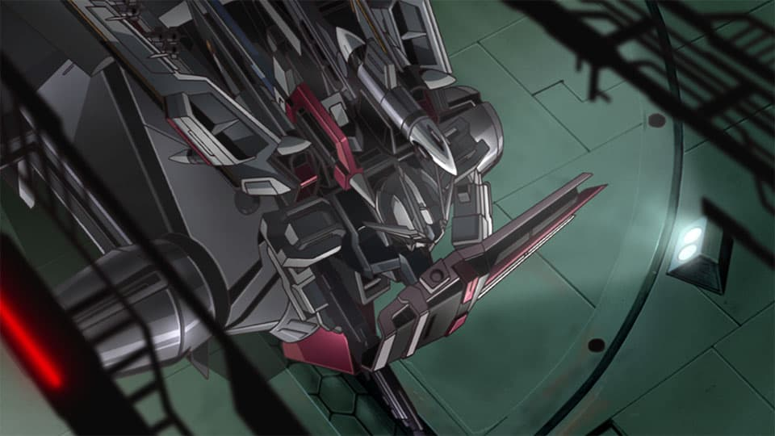
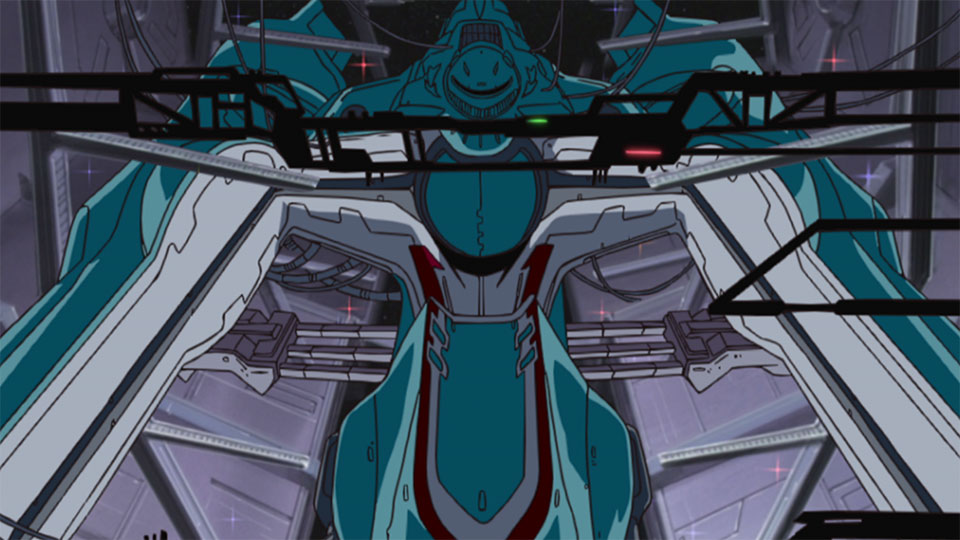
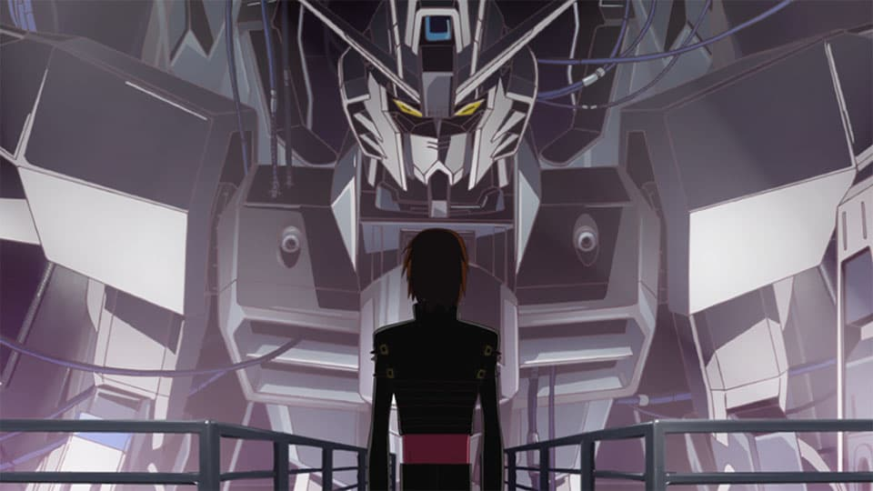
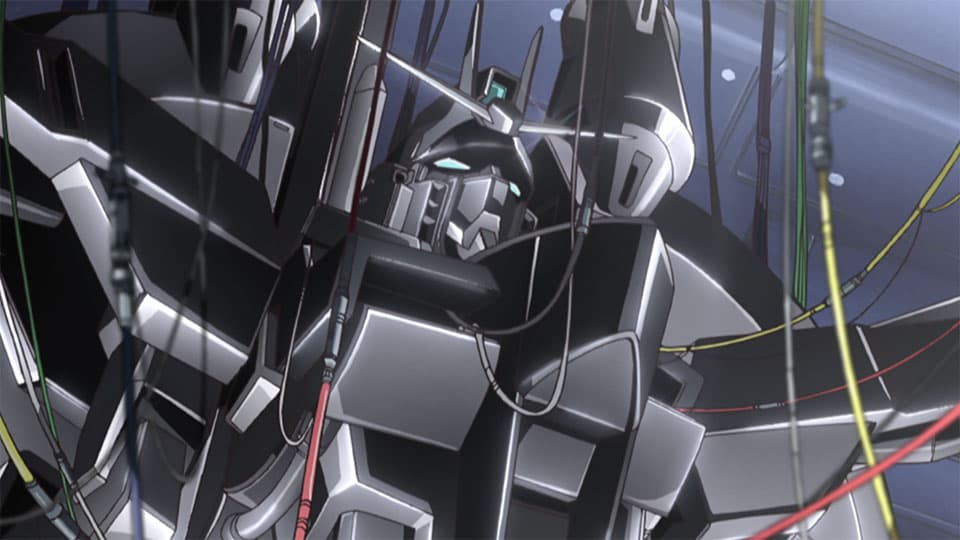

Drag to fly · W S thrust / brake · A D turn · Shift boost · V view
Drag to explore
Hangar 01
Official episode stills guided the violet-gray bulkheads, overhead work lights, catwalks and service cables. The hangar is an original 3D interpretation of these details, rather than an exact reconstruction of a single ship.




Anime reference imagery © SUNRISE. Included here for this local design study; these stills are not textures in the 3D scene.Earth surface: NASA Earth Observatory · Blue Marble, June 2004. Procedural clouds, atmosphere and original carrier exterior.Original Strike Freedom mesh: K0077, CC BY 4.0. Modified materials, photo-guided cockpit and sensor details, armor cleanup, two-stage wing articulation and rigid limb joints. Fine kit details remain approximate.Gundam 3D model (.glb) · Hangar 3D model (.glb)